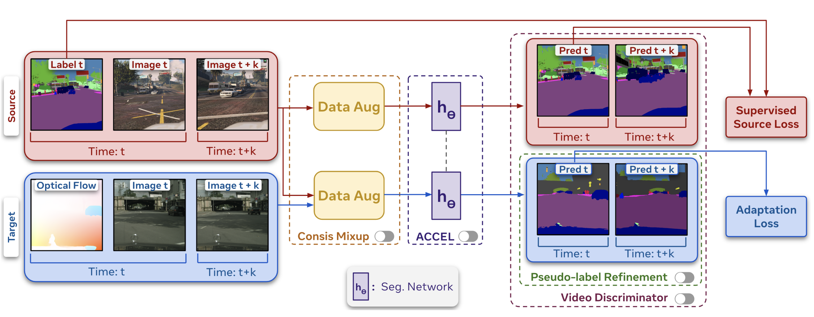
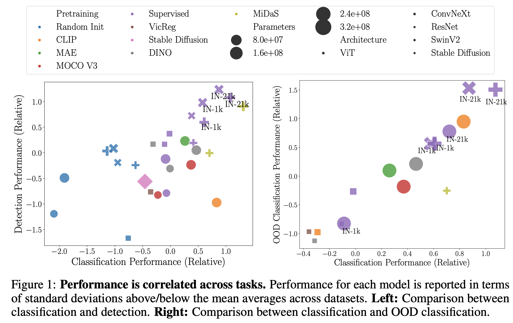
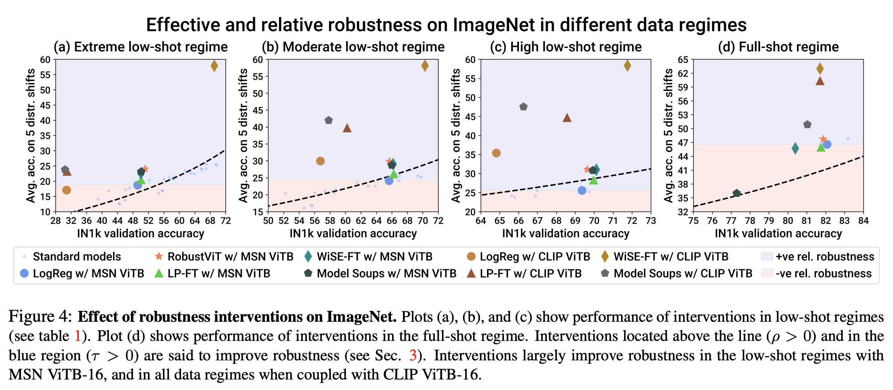
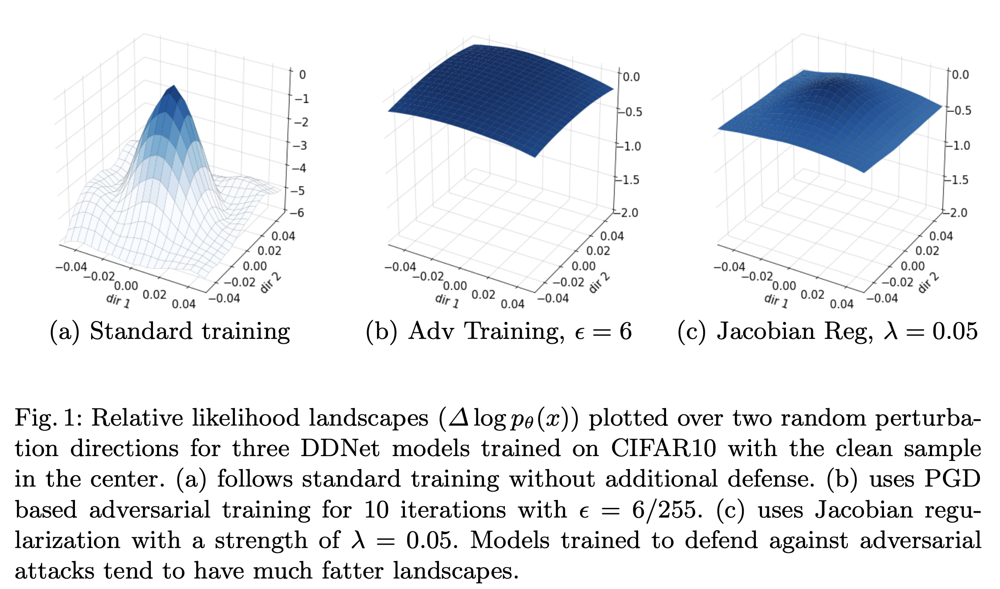
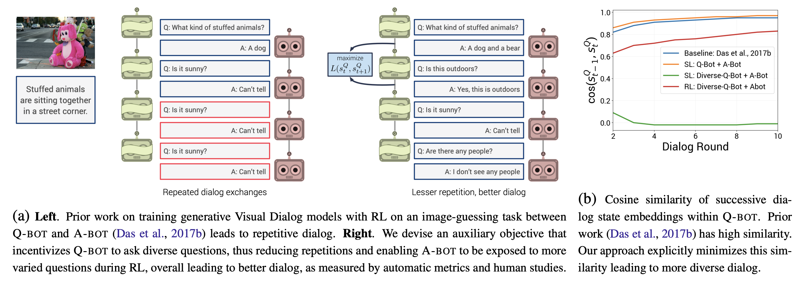
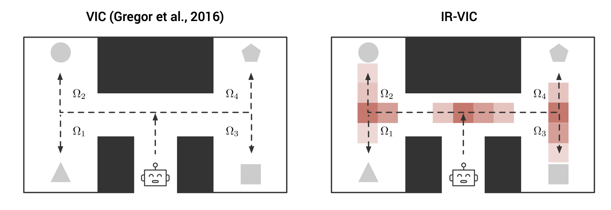
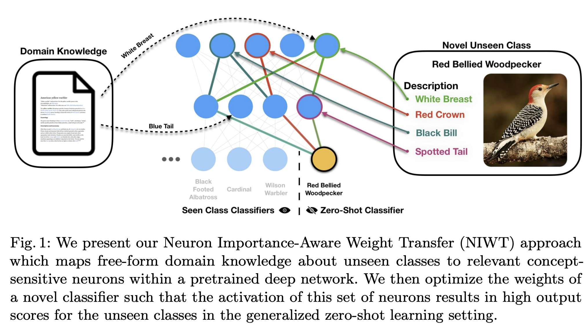
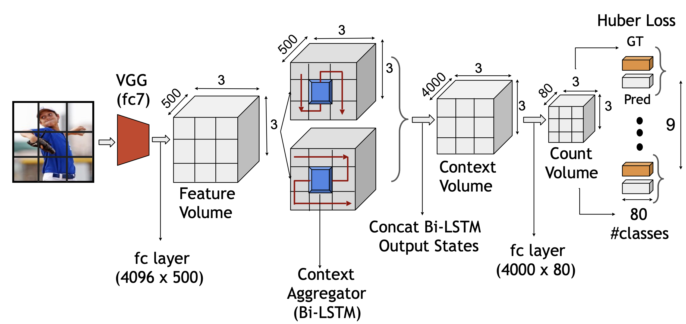

Prithvijit Chattopadhyay
prithvijit3 [at] gatech [dot] edu
Github | Google Scholar | Semantic Scholar | CV | Twitter | LinkedIn
BIO
Update: I am actively looking for full-time positions in the industry starting May 2024. Please reach out to me at prithvijit3 [at] gatech [dot] edu if you think I am a good fit for your team.
I am a final year CS Ph.D. student at Georgia Tech, advised by Prof. Judy Hoffman. I am broadly interested in problems at the intersection of Computer Vision and Machine Learning. Despite their remarkable success, computer vision systems often exhibit aberrant behaviors (reduced performance, uncalibrated predictions, etc.) under distribution shifts. My doctoral research (so far) has focused on the problem of out-of-distribution generalization – how can we develop computer vision systems that can generalize or adapt across changing conditions in a reliable manner?
My research has made progress along the following fundamental steps to be closer to accomplishing this goal:
- Measuring Robustness - Improving resistance to changing conditions requires exposing and understanding failure modes. Some of my work has focused on developing accessible benchmarks and datasets to better understand model behavior by comprehensively evaluating them under diverse distribution shifts and training conditions.
- Improving Generalization - Curating data that covers all anticipated test-time conditions may be infeasible. Some of my work has focused on developing robustness enhancing algorithms that can effectively leverage the nature of available training time data sources.
- Ensuring Reliability - While maintaining performance is important, practical deployment also requires ensuring reliable (confidence-calibrated) predictions under changing conditions. Some of my work has also focused on designing patches that ensure adaptation methods make calibrated and reliable predictions under distribution shifts.
Before this, I earned my Masters in Computer Science (awarded M.S. Research Award) in Spring 2019 from Georgia Tech, advised by Prof. Devi Parikh and Prof. Dhruv Batra, where I worked on a host of vision-language & ML problems – exploring human-AI teams to evaluate explanations, improving responses of & developing cooperative testing for conversational agents, zero-shot transfer, state abstraction in RL and scene-understanding. I earned my Bachelors in Electrical Engineering in 2016 from Delhi Technological University, India, where I worked on developing (now outdated) autonomous underwater vehicles (AUVs).
In past years, I have had the fortune to conduct research at PRIOR, Allen Institute of Artificial Intelligence (Summer 2022, Summer 2020) mentored by Ani Kembhavi & Roozbeh Mottaghi; Deep Learning Group, Microsoft Research Redmond (Summer 2018) mentored by Hamid Palangi; Robotics Research Lab, IIIT Hyderabad (Winter 2014) mentored by Dr. K. Madhava Krishna and Indian Association for the Cultivation of Science (IACS), Kolkata (Summer 2014) mentored by Dr. Soumitra Sengupta on a diverse set of topics - ranging from embodied AI, vision & language to physics.
I also actively participate in reviewing for top computer vision and machine learning conferences & workshops (have accumulated a few reviewer awards - CVPR 2023, CVPR 2022, CVPR 2021, ICLR 2022, MLRC 2021, ICML 2020, NeurIPS 2019, ICLR 2019, NeurIPS 2018 - in the process).

2012-2016
Winter 2014

2016-2017

2017-current
Summer 2018
Summer 2020, 2022
Achievements
Read More |
News
Read More |
Research
AUGCAL: Improving Sim2Real Adaptation by Uncertainty Calibration
on Augmented Synthetic Images
Prithvijit Chattopadhyay, Bharat Goyal, Boglarka Ecsedi, Viraj Prabhu, Judy Hoffman
ICLR 2024
Workshop on Uncertainty Quantification for Computer Vision, ICCV 2023 (Extended
Abstract)
[PDF]
[TL;DR]

We're Not Using Videos Effectively: An Updated Domain Adaptive Video Segmentation Baseline Simar Kareer, Vivek Vijaykumar, Harsh Maheshwari, Prithvijit Chattopadhyay, Viraj Prabhu, Judy Hoffman TMLR 2024 [PDF] [Code] [TL;DR] 
SkyScenes: A Synthetic Dataset for
Aerial Scene Understanding
Sahil Khose*, Anisha Pal*, Aayushi Agarwal*, Deepanshi*,
Judy Hoffman, Prithvijit
Chattopadhyay
ArXiv 2023
[PDF]
[Data]
[TL;DR]

Battle of the Backbones: A Large-Scale Comparison of Pretrained Models across Computer Vision Tasks Micah Goldblum*, Hossein Souri*, Renkun Ni, Manli Shu, Viraj Uday Prabhu, Gowthami Somepalli, Prithvijit Chattopadhyay, Adrien Bardes, Mark Ibrahim, Judy Hoffman, Rama Chellappa, Andrew Gordon Wilson, Tom Goldstein NeurIPS Datasets and Benchmarks 2023 [PDF] [Code] [TL;DR] 
LANCE: Stress-testing Visual Models by Generating
Language-guided
Counterfactual Images
Viraj Prabhu,
Sriram Yenamandra,
Prithvijit Chattopadhyay,
Judy Hoffman
NeurIPS 2023
[PDF]
[code]
[project page]
[TL;DR]

Benchmarking Low-Shot Robustness to Natural Distribution Shifts Aaditya Singh, Kartik Sarangmath, Prithvijit Chattopadhyay, Judy Hoffman ICCV 2023 [PDF] [code] [TL;DR] 
PASTA: Proportional Amplitude Spectrum Training Augmentation for
Syn-to-Real Domain Generalization
Prithvijit Chattopadhyay*,
Kartik Sarangmath*,
Vivek Vijaykumar,
Judy Hoffman
ICCV 2023
[PDF]
[code]
[TL;DR]

RobustNav: Towards Benchmarking Robustness in Embodied
Navigation
Prithvijit Chattopadhyay,
Judy Hoffman,
Roozbeh Mottaghi,
Ani Kembhavi
ICCV 2021
Oral presentation
[PDF]
[code]
[project page]
[video]
[TL;DR]

Likelihood Landscapes: A Unifying Principle Behind Many Adversarial Defenses Fu Lin, Rohit Mittapali, Prithvijit Chattopadhyay, Daniel Bolya, Judy Hoffman Adversarial Robustness in the Real World (AROW), ECCV 2020 NVIDIA Best Paper Runner Up [PDF] [video] [TL;DR] 
Learning to Balance Specificity and Invariance for In and Out of
Domain Generalization
Prithvijit Chattopadhyay,
Yogesh Balaji,
Judy Hoffman
ECCV 2020
Visual Learning with Limited Labels (LwLL), CVPR 2020
[PDF]
[code]
[video]
[TL;DR]

Improving Generative Visual Dialog by Answering Diverse Questions Vishvak Murahari, Prithvijit Chattopadhyay, Dhruv Batra, Devi Parikh, Abhishek Das EMNLP 2019 Visual Question Answering and Dialog Workshop, CVPR 2019 [PDF] [code] [TL;DR] 
IR-VIC: Unsupervised Discovery of Sub-goals for Transfer in RL Nirbhay Modhe, Prithvijit Chattopadhyay, Mohit Sharma, Abhishek Das, Devi Parikh, Dhruv Batra, Ramakrishna Vedantam IJCAI 2020 Workshop on Task Agnostic Reinforcement Learning (TARL), ICLR 2019 [PDF] [TL;DR] 
EvalAI: Towards Better Evaluation Systems for AI Agents
Deshraj Yadav,
Rishabh Jain,
Harsh Agrawal,
Prithvijit Chattopadhyay,
Taranjeet Singh,
Akash Jain,
Shiv Baran Singh,
Stefan Lee,
Dhruv Batra
Workshop on AI Systems, SOSP 2019
[PDF]
[code]
[TL;DR]

Choose Your Neuron: Incorporating Domain-Knowledge through Neuron-Importance Ramprasaath R. Selvaraju*, Prithvijit Chattopadhyay*, Mohamed Elhoseiny, Tilak Sharma, Dhruv Batra, Devi Parikh, Stefan Lee ECCV, 2018 Continual Learning Workshop, NeurIPS 2018 Visually Grounded Interaction and Language (ViGIL) Workshop, NeurIPS 2018 [PDF] [code] [article] [TL;DR] 
Do explanation modalities make VQA Models more predictable to a
human?
Arjun Chandrasekaran*,
Viraj Prabhu*,
Deshraj Yadav*,
Prithvijit Chattopadhyay*,
Devi Parikh
EMNLP 2018
[PDF]
[TL;DR]

Evaluating Visual Conversational Agents via Cooperative Human-AI
Games
Prithvijit Chattopadhyay*,
Deshraj Yadav*,
Viraj Prabhu,
Arjun Chandrasekaran,
Abhishek Das,
Stefan Lee,
Dhruv Batra,
Devi Parikh
HCOMP 2017
Oral presentation
[PDF]
[code]
[TL;DR]

It Takes Two to Tango: Towards Theory of AI's Mind
Arjun Chandrasekaranu*,
Deshraj Yadav*,
Prithvijit Chattopadhyay*,
Viraj Prabhu*,
Devi Parikh
Chalearn Looking at People Workshop, CVPR 2017
[PDF]
[code]
[TL;DR]

Counting Everyday Objects in Everyday Scenes Prithvijit Chattopadhyay*, Ramakrishna Vedantam*, Ramprasaath R. Selvaraju, Dhruv Batra, Devi Parikh CVPR 2017 Spotlight presentation [PDF] [code] [TL;DR] 
Projects
Investigating Visual Dialog Models for Goal-Driven Self-Talk Prithvijit Chattopadhyay (advised by Devi Parikh) 2019 [Report PDF]
Exploring Weak-Supervision and Generative Models for Semantic Segmentation 2018 Prithvijit Chattopadhyay, Ramprasaath R. Selvaraju, Viraj Prabhu [Report PDF]
DTU AUV: Autonomous Underwater Vehicle Prithvijit Chattopadhyay (Acoustics & Control Systems Department) (co-authored with DTU AUV members) 2012-2016 [Report PDF]
Theses
Evaluating Visual Conversational Agents in the Context of Human-AI Cooperative Games Masters in Computer Science (specialization Machine Learning) 2017-2019 [PDF]
Professional Services
Reviewing: CVPR 2018-23, ICCV 2023, ICRA 2021-22, ECCV 2018, NeurIPS 2018-21,23, ICLR 2019-22, ICML 2019-20, ACL 2019, TPAMI
(Design and CSS Courtesy: Shiori Sagawa)